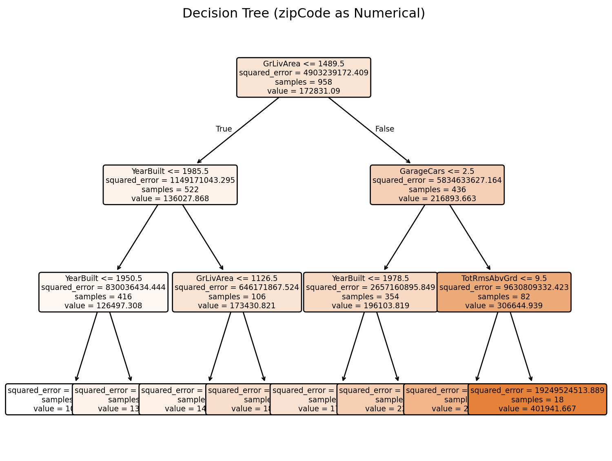
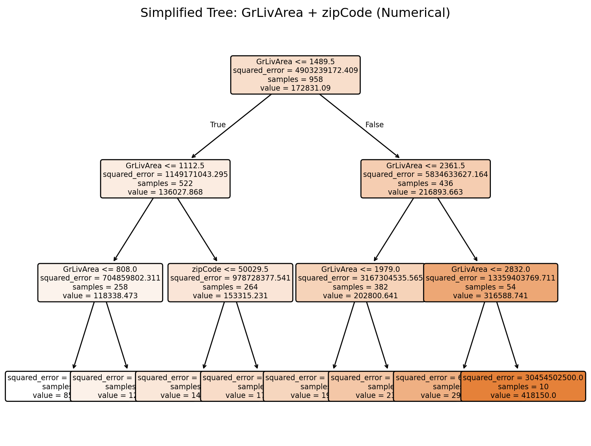
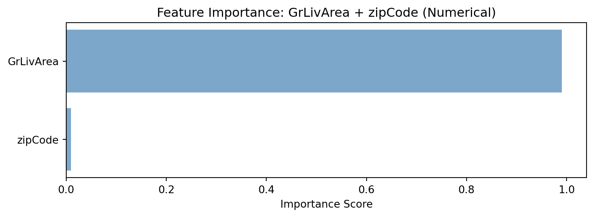
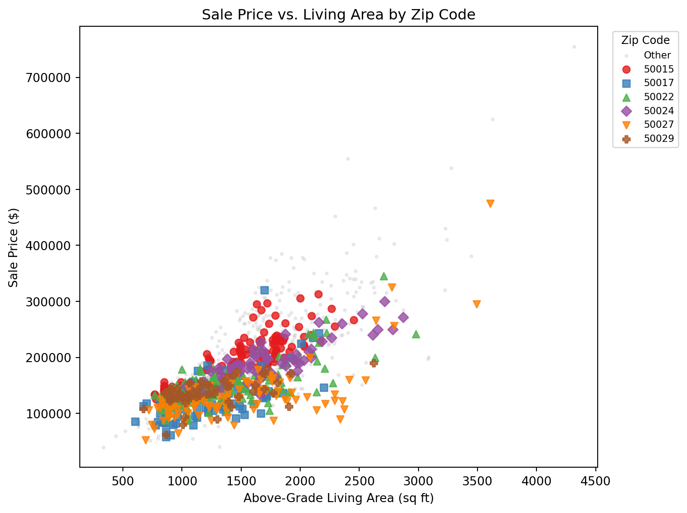
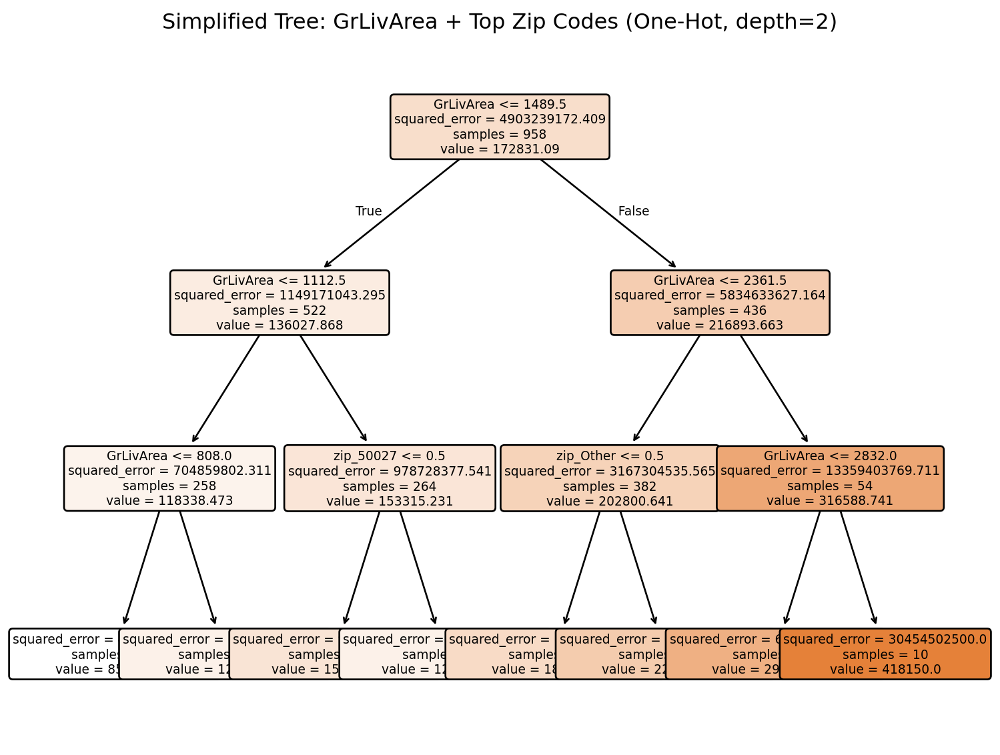
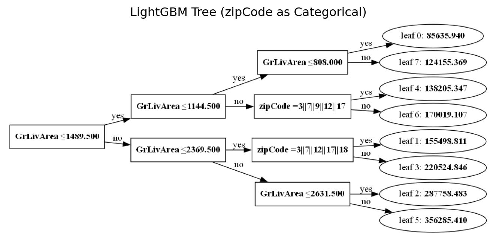

Model built with 8 terminal nodesDecision Tree Challenge
Feature Importance and Categorical Variable Encoding
The Ames Housing Dataset 🏠
We are analyzing the Ames Housing dataset which contains detailed information about residential properties sold in Ames, Iowa from 2006 to 2010. This dataset is perfect for our analysis because it contains a categorical variable (like zip code) and numerical variables (like square footage, year built, number of bedrooms).
The Problem: ZipCode as Numerical vs Categorical
Key Question: What happens when we treat zipCode as a numerical variable in a decision tree? How does this affect feature importance interpretation?
The Issue: Zip codes (50010, 50011, 50012, 50013) are categorical variables representing discrete geographic areas, i.e. neighborhoods. When treated as numerical, the tree might split on “zipCode > 50012.5” - which has no meaningful interpretation for house prices. Zip codes are non-ordinal categorical variables meaning they have no inherent order that aids house price prediction (i.e. zip code 99999 is not the priceiest zip code).
Data Loading and Model Building
Tree Visualization

Feature Importance Analysis

Isolating the Encoding Effect
In the full model above, zipCode competes against 8 other strong numerical predictors and never gets chosen for a split. That makes it hard to tell whether zip code is truly unimportant or whether the encoding is hiding its value. Let’s isolate the effect by building a simplified model that uses only GrLivArea and zipCode as predictors, treating zip code as numerical.
Simplified Model: GrLivArea + zipCode (Numerical)
Test R² (numerical zipCode): 0.4502

Visualizing the Zip Code Effect
The tree above ignores zip code entirely – every split is on GrLivArea. But does zip code actually matter for house prices? Before trying a different encoding, let’s look at the raw data. If zip codes don’t separate prices, there’s nothing to fix. If they do, the numerical encoding is hiding real signal.

The scatter plot makes the case visually: different zip codes cluster at different price levels, even for houses with the same living area. A 1,500 sq ft house in one zip code can sell for dramatically more than the same-sized house in another. Zip code clearly matters – so why does the numerical tree ignore it?
The answer is encoding. A numerical split like “zipCode > 50012.5” has no meaningful relationship to price. To let the tree see zip code differences, we can one-hot encode the top zip codes and rebuild the model.
One-Hot Encoding the Top Zip Codes
Test R² (one-hot top zips, depth=3): 0.4249
Discussion Questions for Challenge
- Numerical vs Categorical Encoding:
Zip code should be treated as a categorical variable, not a numerical one. It is non-ordinal, so there is no real order between values like 50010 and 50013. The tree mostly ignores zip code, but the scatter plot shows that houses of the same size can still have very different prices depending on zip code. That means zip code does matter, but it should be modeled as a category.
- R vs Python Implementation Differences:
R handles categorical variables more naturally in tree models because it can work with factors directly. Python’s scikit-learn trees do not do that natively, so categorical variables have to be encoded first. The scikit-learn documentation says, “the scikit-learn implementation does not support categorical variables for now.” That is the main limitation here. For this kind of problem, R does a better job.
- Can You Get a Decision Tree in Python That Splits on Subsets of Zip Codes?

Yes. I used LightGBM, which can handle categorical variables directly. That is different from scikit-learn, which treats zip code like a regular number unless you encode it first.
In the LightGBM tree, zip code is not split using fake numeric cutoffs like “zipCode > 50012.5.” Instead, the tree groups zip codes together and splits on those groups. That is much closer to how zip code should be treated here.
The main takeaway is simple: when zip code is handled as a true category, the tree can use it in a meaningful way. The result is easier to interpret and makes more sense for real estate data.